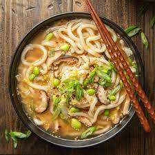

Kake Udon

A traditional Japanese soup.
This classic Japanese noodle soup is all about simplicity.
Made with chewy noodles and homemade umami broth, it is a true comfort food.
Ingredients
- 2 servings udon noodles
- 1 third cup mantsuyu broth
- 2 and a third cups water
- 1 tbsp mirin
- 1 chopped green onion
Recioe directions
- Follow the instructions on your concentrated mentsuyu bottle for the correct dilution ratio for noodle soup broth.
- In a meduim saucepan, combine the water, mantsuyu and mirin. Bring it to a simmer over meduim heat. Once simmering, remove the pot from the heat. Cover with a lid and set aside
- Bring a large pot of water to a boil. When the water comes to a full boil, add 2 servings udon noodles and cook according to the pacage instructions.
- Using chopsticks, stir the noodles so they don't stick to the bottom of the pot.
- When the noodles are done cooking, drain them in a colander and cool under cold running water
- Once the noodles are cool enough to touch, use your hands to rince them under the cold running water to remove the starch and give them a firm texture. Then switch to hot running water to warm up the noodles.
- Serve the udon noodles in individual bowls. Pour the hot broth over the noodles and top with chopped green onion.